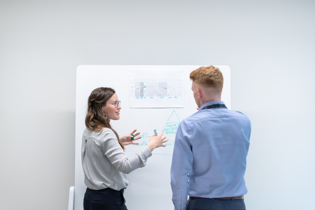

Some facts
-

1. Create a website that:
- a. Explains why the problem is important from a social or technological perspective.
- b. Describes how the problem relates to the solution that you have identified.
- c. Describes what the solution is. For example, if your solution is a mobile app, then describe the app. You do not need to code the solution, but it is recommended that you create a lo-fi prototype to showcase your solution.
UAT’s cutting-edge Bachelor of Science Business Technology degree focuses in the areas of entrepreneurship and prepare students for tech startups and high demand technology management careers in today’s tech-driven business world. With a dynamic and synergistically chosen curriculum, our Business Technology degree students learn a unique combination of technical, analytical and managerial skills.
About us
UAT is a private technology University focused on educating students in advancing technology who desire to innovate for our future. Our technology
Contact Us
Address:
2625 W. Baseline Road
Tempe, AZ 85283-1056